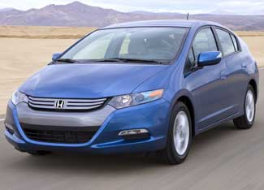
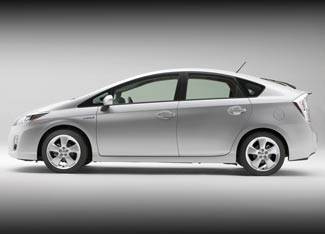

While many automakers are looking to the future with various types of electric vehicles, for now the battle for fuel efficiency is still being won by hybrid vehicles. That battle took on a decidedly retro feel at this year's North American International Auto Show in Detroit, where Honda unveiled the revived version of its Honda Insight, while Toyota revealed the third-generation version of the Toyota Prius. But although those names are strongly reminiscent of the situation back in 2000, the details have changed dramatically during the past nine years.
The original Honda Insight, released in the 2000 model year, was a two-seat hatchback with a combined fuel economy of 65 miles per gallon, although that number would fall to 53 mpg under the recently revised standards, according to fueleconomy.gov. Unfortunately, sales of the diminutive car were always anemic.
Honda plans to break from that history with the new Insight, slated to be released in April. The new Honda Insight will be labeled as a 2010 model and seats five, yet still achieves a fuel economy of 40 mpg in the city and 43 mpg on the highway. But Honda's main emphasis for the new model is affordability, as the 2010 Honda Insight will be priced below the cost of the Honda Civic Hybrid.
In contrast to the original Honda Insight, the 2001 Toyota Prius, introduced in late 2000, was a four-door, five-passenger sedan with a combined fuel economy of 48 mpg, although that figure would drop to 41 mpg under today's standards, according to fueleconomy.gov. The Prius quickly became the best-selling hybrid in the world. The third-generation model still seats five, but it's a roomier, more powerful vehicle that achieves a combined fuel economy of 50 mpg. Although it looks quite similar to the second-generation Prius, the 2010 Prius is more aerodynamic. It also has a 20 percent lighter electric drive system and a larger, more powerful engine. Among the available added features for the new Prius is a solar-powered ventilation system to cool the car while it’s parked.
Although pricing for the new vehicles has not been announced, the Prius is expected to cost more than the Insight. Only time will tell which vehicle will prove to be more popular.
Toyota's Lexus division also adds a new wrinkle to the competition with the debut of the first dedicated luxury hybrid. The 2010 HS 250h, available in late summer, combines a 2.4-liter, four-cylinder engine with a hybrid system to generate a combined 187 horsepower. The vehicle will be the most fuel-efficient in the Lexus lineup, but Toyota has not released an estimated fuel economy or price for the new vehicle. The HS 250h is considered to be an entry-level vehicle for the luxury market.
|
 HONDA The 2010 Honda Insight will be released in April and has a city/highway fuel economy rating of 40/43. |
 TOYOTA The third-generation Toyota Prius achieves a combined fuel economy of 50 mpg and has a more powerful engine compared with the vehicle's previous models. |
|